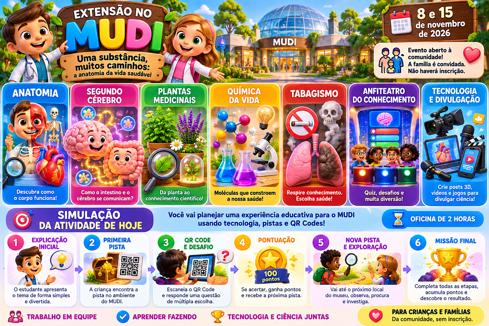
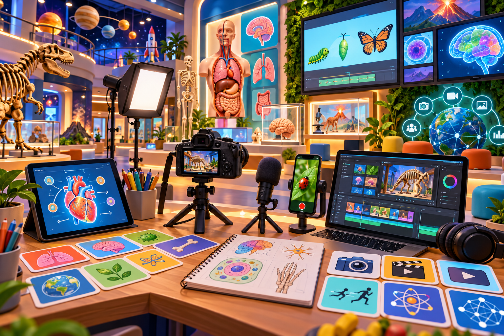
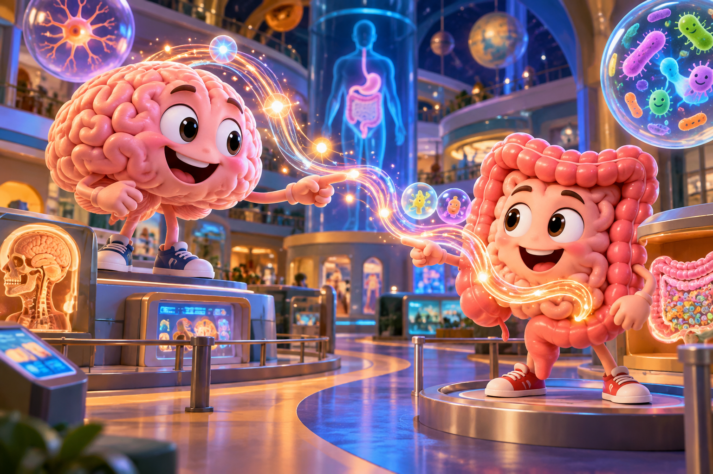
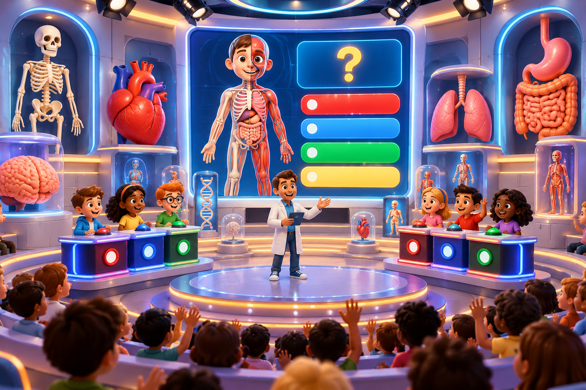
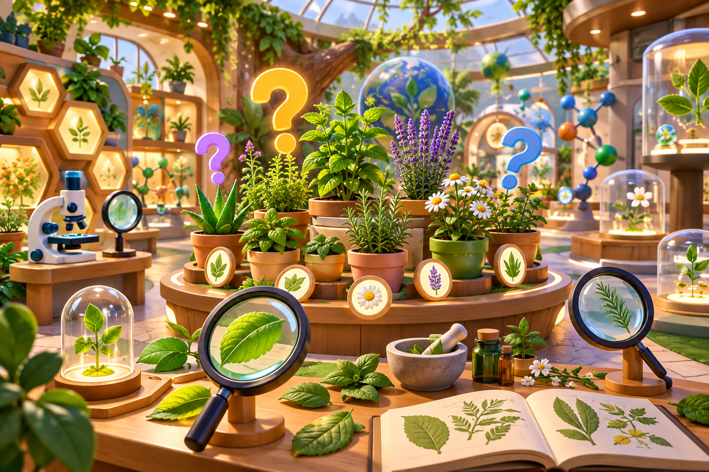
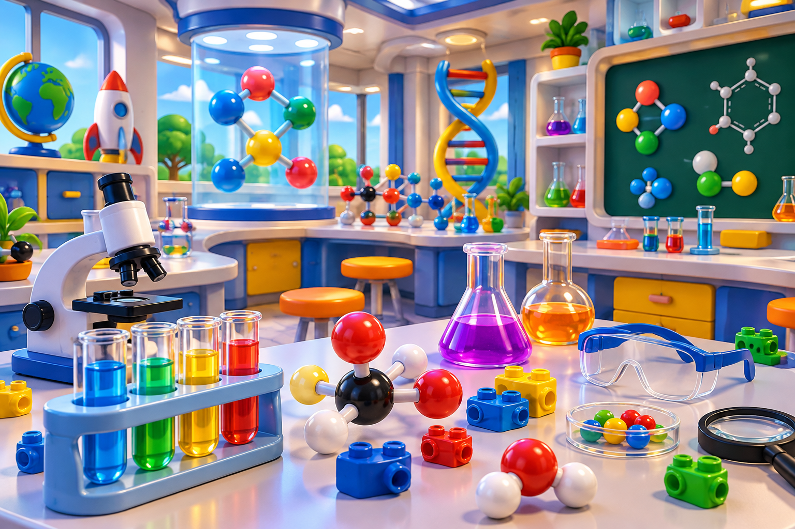
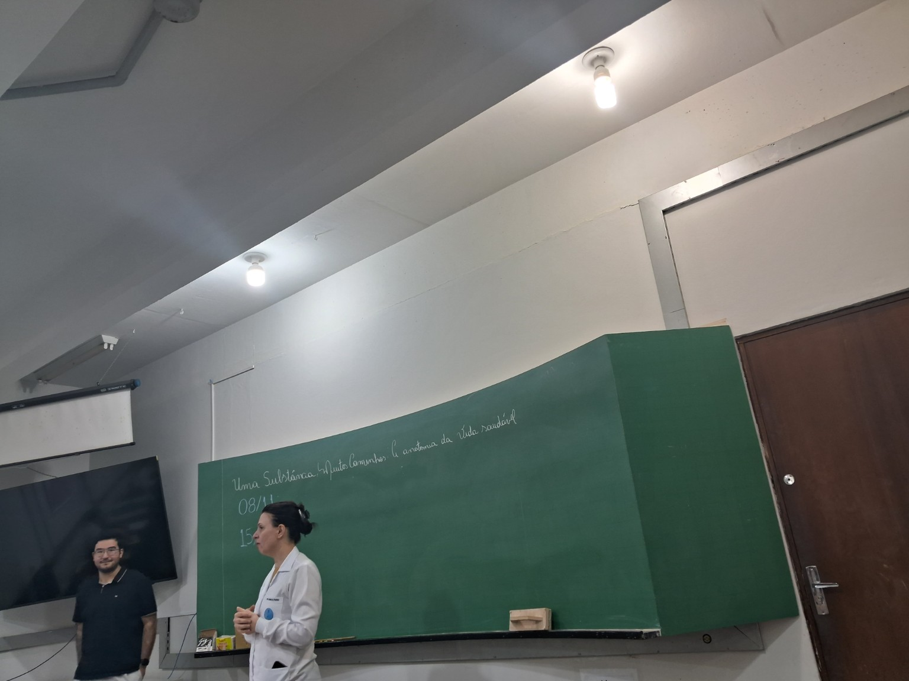
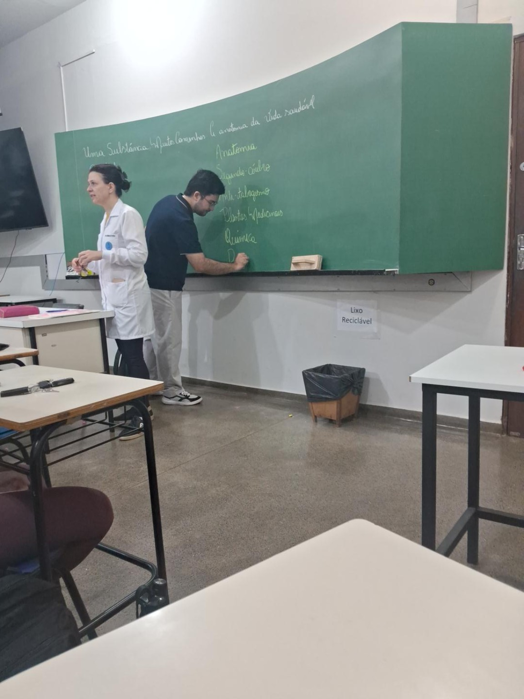
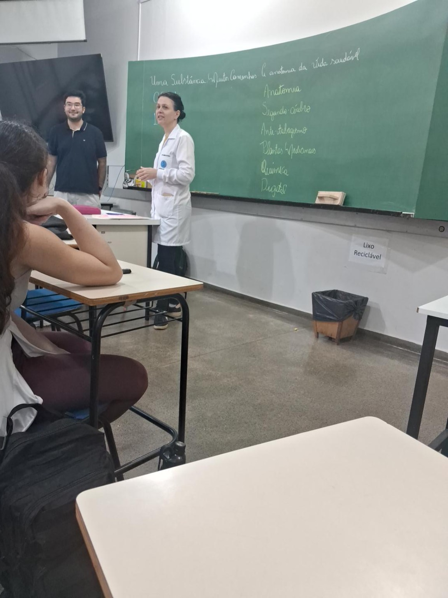

0–25 min
Missão 1 — Divulgue
Público, chamada, card, story e convite. Criar uma arte 3D para a extensão.

A imagem acima passa a ser a identidade visual do aplicativo. Hoje, o estudante de Medicina vai experimentar como transformar um tema científico em uma atividade para crianças e famílias: explicar, lançar uma pista, fazer a criança explorar o ambiente, encontrar um QR Code, responder um desafio, pontuar e receber uma nova pista.
Todos experimentam divulgação, vídeo e criação de uma brincadeira científica. O tema sorteado hoje é apenas uma simulação. Depois do sorteio oficial, cada equipe conhecerá o espaço físico do MUDI e adaptará a ideia ao que realmente existe no ambiente.
Público, chamada, card, story e convite. Criar uma arte 3D para a extensão.
Roteiro de 15–20 s, movimento, narração, legenda e edição.
Sortear um tema apenas para simulação e desenhar uma atividade infantil.
Definir como a tecnologia fará a criança explorar uma peça, modelo, planta, experimento ou espaço.
Cada equipe apresenta: 1 arte + 1 vídeo/roteiro + 1 brincadeira + 1 conexão físico-digital + 1 chamada para o público.
Uma boa divulgação responde rapidamente: por que isso é interessante para mim? Não copie linguagem de artigo científico. Crie curiosidade sem prometer resultados de saúde e sem transformar simplificações em “verdades”.

Curiosidade + experiência + informação prática + convite.
Ex.: “O intestino conversa com o cérebro? Venha investigar essa conexão com a gente.”
Produza uma peça para convidar a comunidade para o MUDI nos dias 8 e 15 de novembro de 2026.
O objetivo não é “fazer IA por fazer”. O vídeo precisa convidar, explicar ou despertar uma pergunta. Recursos gratuitos e limites de IA podem mudar; confira o plano disponível no dia.
Experimente animar uma imagem com prompt de movimento quando houver créditos gratuitos disponíveis.
Abrir PixVerse ↗Escolha ou sorteie um tema apenas para treinar hoje. Depois do sorteio oficial, a equipe deverá conhecer o ambiente real antes de decidir a experiência definitiva.

Brincadeira: a criança recebe uma pista digital, procura a estrutura no modelo/peça física e volta para desbloquear a próxima pista.
Pergunta: o que a tecnologia mostra que a peça sozinha não mostra?

Brincadeira: seguir pistas entre cérebro e intestino, associar sinais e depois localizar as estruturas em modelos físicos.
Gancho: “O intestino conversa com o cérebro?”

Brincadeira: plateia responde A/B/C, levanta placas ou aperta botões; o estudante explica o porquê após cada rodada.
Regra: o quiz abre conversa — não substitui a explicação.

Brincadeira: observar folhas/plantas, procurar pistas com lupa e classificar afirmações em “investigar” e “já sabemos”.
Cuidado: “natural” não significa automaticamente “seguro”.

Brincadeira: montar modelos com peças coloridas, comparar formas e usar o digital para animar o caminho de uma substância.
Conexão: objeto físico → modelo → explicação → animação.
Simulação: criar uma atividade preventiva e adequada à faixa etária, sem culpabilização. A criança pode investigar o sistema respiratório, comparar situações e descobrir como proteger pulmões e vias respiratórias.
Integração: modelo/peça física + desafio escolhido pela criança + explicação curta do estudante + feedback digital.
Missão: transformar o que os demais grupos desenvolverem em card, story, vídeo, convite e material acessível para a comunidade.
Pergunta: como comunicar sem perder precisão científica?
Cada aluno/grupo responde às alternativas como se já tivesse recebido um ambiente. Não há resposta certa. As escolhas são decisões de projeto. Ao final, o aplicativo combina as respostas e monta uma proposta de atividade para realizar com as crianças. Amanhã isso serve apenas para treinar o raciocínio antes do sorteio oficial e da visita ao espaço físico do MUDI.
Uma opção para a simulação é espalhar pistas pelo ambiente. O QR não substitui o estudante nem a peça física: ele cria a passagem para a próxima descoberta.
Preencha o “raio-X” da estação. Se você ainda não conhece o ambiente do MUDI, escreva “a confirmar no MUDI”. Isso é melhor do que inventar um recurso físico que talvez não exista.
Gere um resumo do que sua equipe imaginou hoje. Ele é um protótipo; depois do sorteio oficial, deverá ser confrontado com o ambiente físico real.


